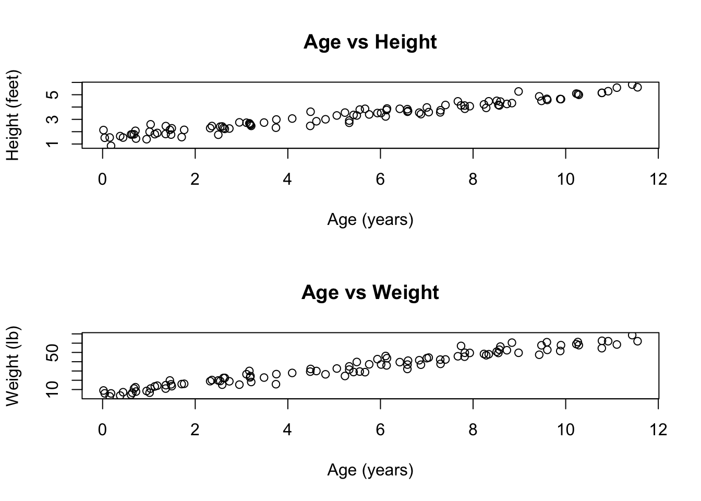
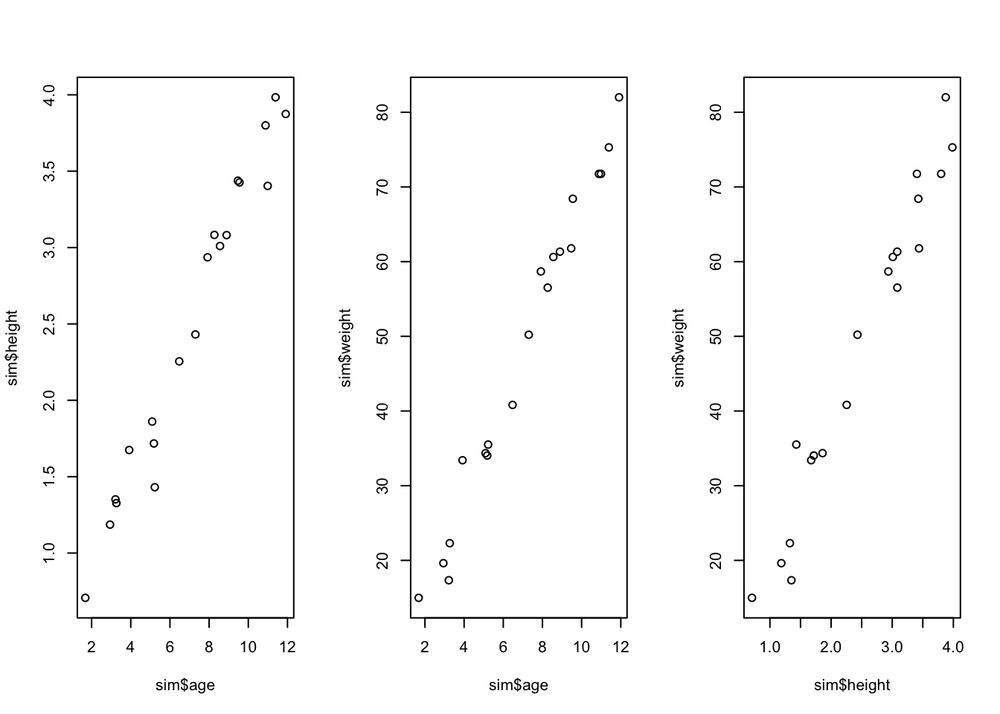

Please use an RMarkdown file to complete this assignment. Make sure you reserve code chunks for code and write out any interpretations or explanations outside of code chunks. Submit the knitted PDF file containing your code and written answers on Canvas.
Questions
From the Howell1 dataset, consider only people younger than 13 years old. Estimate the causal association between age and weight. Assume that age influences weight through two paths. First, age influences height, and height influences weight. Second, age directly influences weight through age-related changes in muscle growth and body proportions.
Write a generative simulation that takes age as an input and simulates height and weight.
Click to see the answer
# Define the simulation functionsimulate_growth <-function(age) { n =length(age)# Simulate height (in feet) height <-rnorm(n, mean =1.5+ .3*age +0.005*age^2, # Quadratic growth patternsd = .3) # Random variation# Simulate weight (in lb) weight <-rnorm(n,mean =6.5+5*age +0.25*height, # Linear relationship with age and heightsd =4) # Random variationdata.frame(age=age, height=height, weight=weight)}# Generate data for ages 0-12ages <-runif(100, 0, 12)sim_data =simulate_growth(ages)# Plot the simulated relationshipspar(mfrow=c(2,1))plot(sim_data$age, sim_data$height, xlab="Age (years)", ylab="Height (feet)",main="Age vs Height")plot(sim_data$age, sim_data$weight,xlab="Age (years)", ylab="Weight (lb)",main="Age vs Weight")

This simulation: 1. Takes age as input and generates both height and weight 2. Uses a quadratic function for height to capture the non-linear growth pattern 3. Uses a linear function for weight that depends on both age and height 4. Includes random variation (noise) in both height and weight 5. The plots show the expected relationships: both height and weight increase with age
Write out a mathematical model to estimate the linear relationship between age and weight.
Click to see the answer
There are many priors that could be appropriate here. Don’t worry if yours looks different from mine. Here’s just one example:
Where: - \(W_i\) is the weight of individual \(i\) - \(A_i\) is the age of individual \(i\) - \(\alpha\) is the intercept - \(\beta_A\) is the effect of age on weight - \(\sigma\) is the standard deviation of the weight distribution
This model: 1. Assumes weight is normally distributed around a mean \(\mu\) 2. The mean \(\mu\) is a linear function of age 3. Uses weakly informative priors for all parameters 4. The exponential prior on \(\sigma\) ensures it’s positive
Fit this model using brms. Create two plots: one of regression lines implied by your prior and one of the regression lines implied by the posterior.
Click to see the answer
# Load required packageslibrary(brms)
Loading required package: Rcpp
Loading 'brms' package (version 2.22.0). Useful instructions
can be found by typing help('brms'). A more detailed introduction
to the package is available through vignette('brms_overview').
Attaching package: 'brms'
The following object is masked from 'package:stats':
ar
── Conflicts ────────────────────────────────────────── tidyverse_conflicts() ──
✖ dplyr::filter() masks stats::filter()
✖ dplyr::lag() masks stats::lag()
ℹ Use the conflicted package (<http://conflicted.r-lib.org/>) to force all conflicts to become errors
library(cowplot)
Attaching package: 'cowplot'
The following object is masked from 'package:lubridate':
stamp
data("Howell1", package="rethinking")# Filter for children under 13d <- Howell1[Howell1$age <13,]# Define the modelmp <-brm( weight ~ age,data = d,prior =c(prior(normal(7, 1.5), class = Intercept),prior(normal(0, 1), class = b),prior(exponential(1), class = sigma) ),sample_prior ="only"# First get prior samples)
Compiling Stan program...
Trying to compile a simple C file
Running /Library/Frameworks/R.framework/Resources/bin/R CMD SHLIB foo.c
using C compiler: ‘Apple clang version 16.0.0 (clang-1600.0.26.6)’
using SDK: ‘MacOSX15.2.sdk’
clang -arch arm64 -I"/Library/Frameworks/R.framework/Resources/include" -DNDEBUG -I"/Library/Frameworks/R.framework/Versions/4.4-arm64/Resources/library/Rcpp/include/" -I"/Library/Frameworks/R.framework/Versions/4.4-arm64/Resources/library/RcppEigen/include/" -I"/Library/Frameworks/R.framework/Versions/4.4-arm64/Resources/library/RcppEigen/include/unsupported" -I"/Library/Frameworks/R.framework/Versions/4.4-arm64/Resources/library/BH/include" -I"/Library/Frameworks/R.framework/Versions/4.4-arm64/Resources/library/StanHeaders/include/src/" -I"/Library/Frameworks/R.framework/Versions/4.4-arm64/Resources/library/StanHeaders/include/" -I"/Library/Frameworks/R.framework/Versions/4.4-arm64/Resources/library/RcppParallel/include/" -I"/Library/Frameworks/R.framework/Versions/4.4-arm64/Resources/library/rstan/include" -DEIGEN_NO_DEBUG -DBOOST_DISABLE_ASSERTS -DBOOST_PENDING_INTEGER_LOG2_HPP -DSTAN_THREADS -DUSE_STANC3 -DSTRICT_R_HEADERS -DBOOST_PHOENIX_NO_VARIADIC_EXPRESSION -D_HAS_AUTO_PTR_ETC=0 -include '/Library/Frameworks/R.framework/Versions/4.4-arm64/Resources/library/StanHeaders/include/stan/math/prim/fun/Eigen.hpp' -D_REENTRANT -DRCPP_PARALLEL_USE_TBB=1 -I/opt/R/arm64/include -fPIC -falign-functions=64 -Wall -g -O2 -c foo.c -o foo.o
In file included from <built-in>:1:
In file included from /Library/Frameworks/R.framework/Versions/4.4-arm64/Resources/library/StanHeaders/include/stan/math/prim/fun/Eigen.hpp:22:
In file included from /Library/Frameworks/R.framework/Versions/4.4-arm64/Resources/library/RcppEigen/include/Eigen/Dense:1:
In file included from /Library/Frameworks/R.framework/Versions/4.4-arm64/Resources/library/RcppEigen/include/Eigen/Core:19:
/Library/Frameworks/R.framework/Versions/4.4-arm64/Resources/library/RcppEigen/include/Eigen/src/Core/util/Macros.h:679:10: fatal error: 'cmath' file not found
679 | #include <cmath>
| ^~~~~~~
1 error generated.
make: *** [foo.o] Error 1
# Get prior samplesprior_samples <-as_draws_df(mp)# Now fit the model with the datam <-brm( weight ~ age,data = d,prior =c(prior(normal(7, 1.5), class = Intercept),prior(normal(0, 1), class = b),prior(exponential(1), class = sigma) ))
Compiling Stan program...
Trying to compile a simple C file
Running /Library/Frameworks/R.framework/Resources/bin/R CMD SHLIB foo.c
using C compiler: ‘Apple clang version 16.0.0 (clang-1600.0.26.6)’
using SDK: ‘MacOSX15.2.sdk’
clang -arch arm64 -I"/Library/Frameworks/R.framework/Resources/include" -DNDEBUG -I"/Library/Frameworks/R.framework/Versions/4.4-arm64/Resources/library/Rcpp/include/" -I"/Library/Frameworks/R.framework/Versions/4.4-arm64/Resources/library/RcppEigen/include/" -I"/Library/Frameworks/R.framework/Versions/4.4-arm64/Resources/library/RcppEigen/include/unsupported" -I"/Library/Frameworks/R.framework/Versions/4.4-arm64/Resources/library/BH/include" -I"/Library/Frameworks/R.framework/Versions/4.4-arm64/Resources/library/StanHeaders/include/src/" -I"/Library/Frameworks/R.framework/Versions/4.4-arm64/Resources/library/StanHeaders/include/" -I"/Library/Frameworks/R.framework/Versions/4.4-arm64/Resources/library/RcppParallel/include/" -I"/Library/Frameworks/R.framework/Versions/4.4-arm64/Resources/library/rstan/include" -DEIGEN_NO_DEBUG -DBOOST_DISABLE_ASSERTS -DBOOST_PENDING_INTEGER_LOG2_HPP -DSTAN_THREADS -DUSE_STANC3 -DSTRICT_R_HEADERS -DBOOST_PHOENIX_NO_VARIADIC_EXPRESSION -D_HAS_AUTO_PTR_ETC=0 -include '/Library/Frameworks/R.framework/Versions/4.4-arm64/Resources/library/StanHeaders/include/stan/math/prim/fun/Eigen.hpp' -D_REENTRANT -DRCPP_PARALLEL_USE_TBB=1 -I/opt/R/arm64/include -fPIC -falign-functions=64 -Wall -g -O2 -c foo.c -o foo.o
In file included from <built-in>:1:
In file included from /Library/Frameworks/R.framework/Versions/4.4-arm64/Resources/library/StanHeaders/include/stan/math/prim/fun/Eigen.hpp:22:
In file included from /Library/Frameworks/R.framework/Versions/4.4-arm64/Resources/library/RcppEigen/include/Eigen/Dense:1:
In file included from /Library/Frameworks/R.framework/Versions/4.4-arm64/Resources/library/RcppEigen/include/Eigen/Core:19:
/Library/Frameworks/R.framework/Versions/4.4-arm64/Resources/library/RcppEigen/include/Eigen/src/Core/util/Macros.h:679:10: fatal error: 'cmath' file not found
679 | #include <cmath>
| ^~~~~~~
1 error generated.
make: *** [foo.o] Error 1
Attaching package: 'patchwork'
The following object is masked from 'package:cowplot':
align_plots
(p1 | p2)

The plots show: 1. Prior regression lines: These show our uncertainty before seeing the data. The lines are widely spread, reflecting our weak priors. 2. Posterior regression lines: These show our uncertainty after seeing the data. The lines are much more concentrated, showing that the data has informed our estimates.
The model summary shows the estimated effects of age and height on weight, along with their uncertainty. The standardized coefficients allow us to compare the relative importance of age and height in predicting weight.